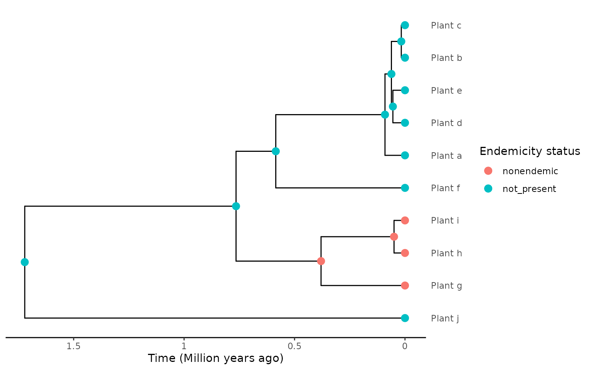
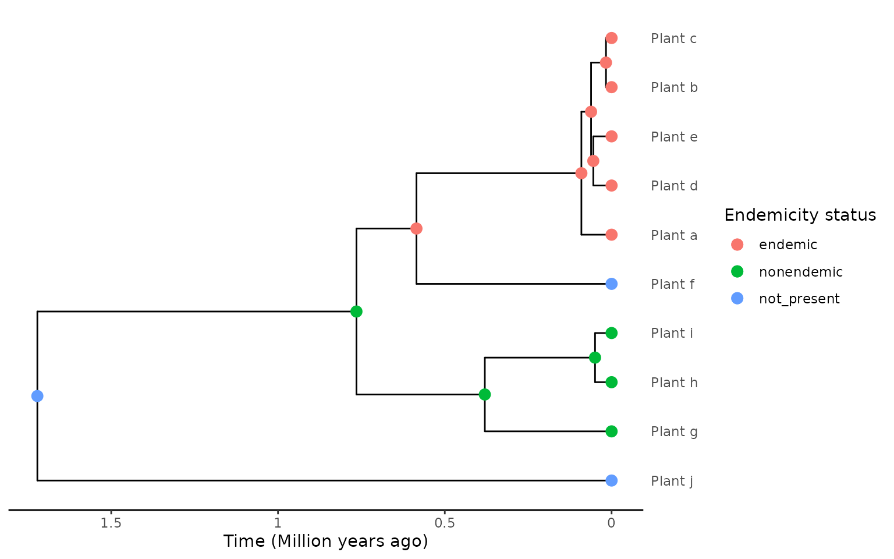
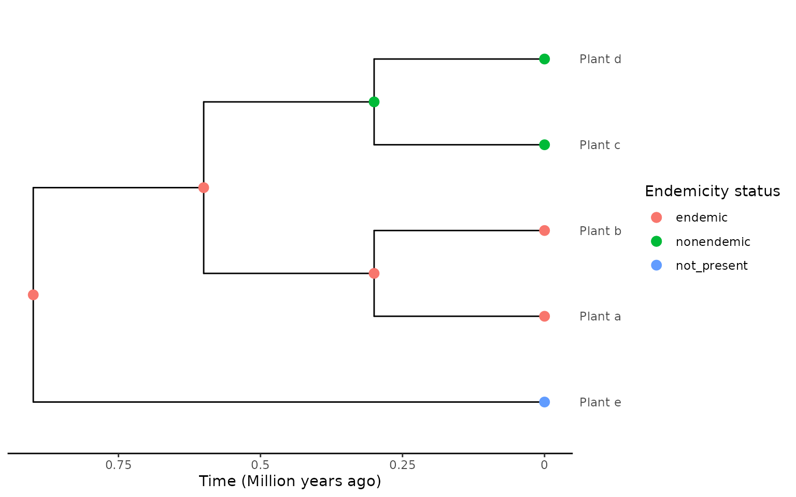
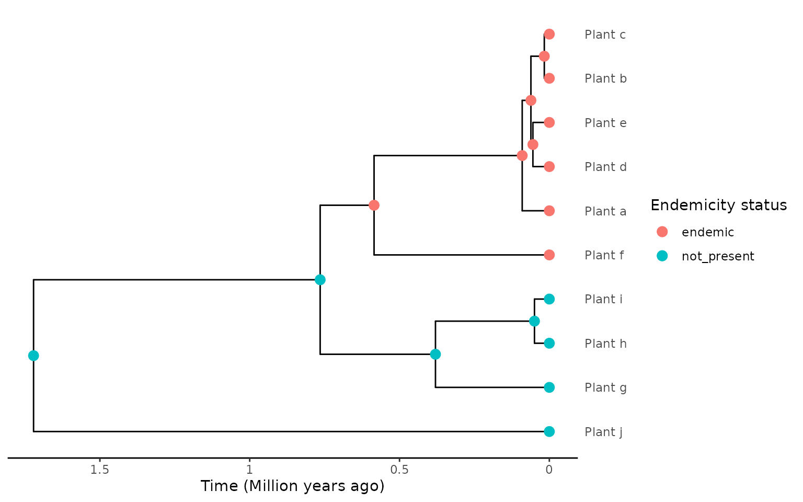
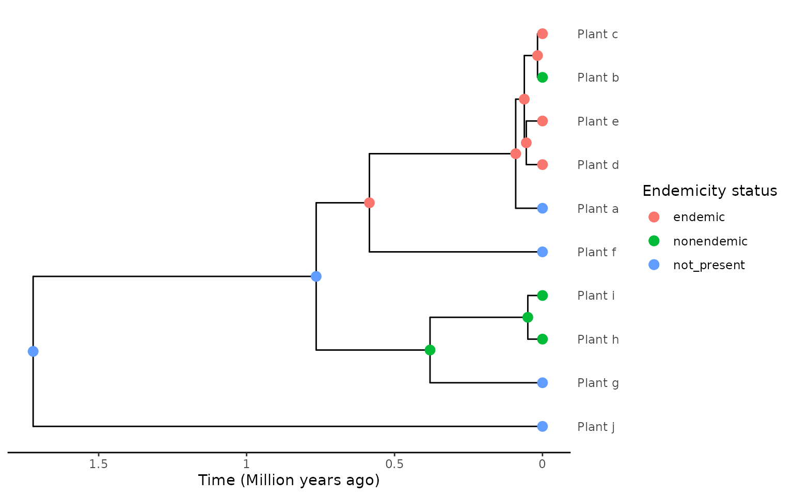
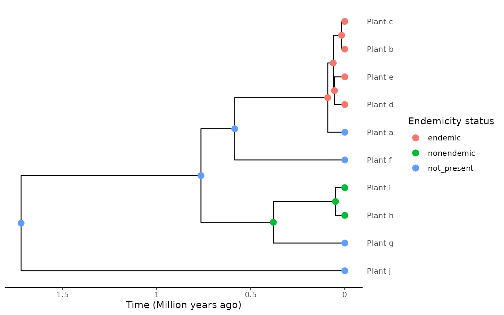

Forcing non-endemic singletons: solutions and limitations
Source:vignettes/Forcing_nonendemic_singleton.Rmd
Forcing_nonendemic_singleton.Rmd
library(DAISIEprep)
library(ape)
library(phylobase)
#>
#> Attaching package: 'phylobase'
#> The following object is masked from 'package:ape':
#>
#> edgesProblem statement
When using the “asr” extraction method, non-endemic species that are closely phylogenetically related can be potentially erroneously lumped into a single clade. This clade is labelled endemic as the DAISIE model cannot handle non-endemic clades. For example, see the plot below which shows 3 plant species that are grouped into a single clade even though they are non-endemic island species.
set.seed(
1,
kind = "Mersenne-Twister",
normal.kind = "Inversion",
sample.kind = "Rejection"
)
phylo <- ape::rcoal(10)
phylo$tip.label <- c("Plant_a", "Plant_b", "Plant_c", "Plant_d", "Plant_e",
"Plant_f", "Plant_g", "Plant_h", "Plant_i", "Plant_j")
phylo <- phylobase::phylo4(phylo)
endemicity_status <- c("not_present", "not_present", "not_present",
"not_present", "not_present", "not_present",
"nonendemic", "nonendemic", "nonendemic",
"not_present")
phylod <- phylobase::phylo4d(phylo, as.data.frame(endemicity_status))
phylod <- add_asr_node_states(phylod = phylod, asr_method = "mk", rate_model = "ER", tie_preference = "mainland")
plot_phylod(phylod = phylod)
If you have a priori knowledge that the non-endemic species
should be separate colonisations then this can be taken into account
when extracting the phylogenetic island community data using
extract_island_species(). For example, if you have a group
of closely related geographically widespread species, then it is
reasonable to assume they did not speciate on the island.
First solution: forcing non-endemic island species to be singletons
The extract_island_species() function has an argument
force_nonendemic_singleton, which by default is
FALSE which fully trusts the ancestral state reconstruction
(see add_asr_node_states()) allowing non-endemics to be
grouped into an endemic clade. The
force_nonendemic_singleton argument is only active when
using the extraction_method = "asr", if using
extraction_method = "min" then
force_nonendemic_singleton will be ignored. For
example:
island_tbl <- extract_island_species(
phylod = phylod,
extraction_method = "asr",
force_nonendemic_singleton = FALSE
)
island_tbl
#> Class: Island_tbl
#> clade_name status missing_species col_time col_max_age branching_times
#> 1 Plant_g endemic 0 0.7648553 FALSE 0.380034....
#> min_age species clade_type
#> 1 NA Plant_g,.... 1As you can see the code above extracts only a single colonisation event resulting in an endemic clade.
However, if force_nonendemic_singleton is set to
TRUE then closely related non-endemic island species will
be split into single-species island colonists (see Limitations section
below for cases when this does not work). For example:
island_tbl <- extract_island_species(
phylod = phylod,
extraction_method = "asr",
force_nonendemic_singleton = TRUE
)
island_tbl
#> Class: Island_tbl
#> clade_name status missing_species col_time col_max_age branching_times
#> 1 Plant_g nonendemic 0 0.38003405 FALSE NA
#> 2 Plant_h nonendemic 0 0.04960523 FALSE NA
#> 3 Plant_i nonendemic 0 0.04960523 FALSE NA
#> min_age species clade_type
#> 1 NA Plant_g 1
#> 2 NA Plant_h 1
#> 3 NA Plant_i 1In this case, the force_nonendemic_singleton = TRUE now
allows non-endemics to be extracted as separate colonisation events to
the island.
Limitation
The first limitation of the approach of setting
force_nonendemic_singleton to TRUE is it does
not work when the non-endemic island species are reconstructed to be
embedded within an endemic clade. For example, take a look at the tree
below and see how the ancestral state reconstruction has a node on the
island that is the ancestor of both the endemic and non-endemic
species:
endemicity_status <- c("endemic", "endemic", "endemic",
"endemic", "endemic", "not_present",
"nonendemic", "nonendemic", "nonendemic",
"not_present")
phylod <- phylobase::phylo4d(phylo, as.data.frame(endemicity_status))
phylod <- add_asr_node_states(phylod = phylod, asr_method = "mk", rate_model = "ER", tie_preference = "mainland")
plot_phylod(phylod = phylod)
In this case even when setting
force_nonendemic_singleton = TRUE the clade is still
extracted as a single endemic clade.
island_tbl <- extract_island_species(
phylod = phylod,
extraction_method = "asr",
force_nonendemic_singleton = TRUE
)
#> Warning in rm_nonendemic_in_clade(phylod = phylod, island_tbl = island_tbl): Non-endemic species may be grouped within an endemic clade.
#> force_nonendemic_singleton cannot remove non-endemic species from endemic clades in these cases.
island_tbl
#> Class: Island_tbl
#> clade_name status missing_species col_time col_max_age branching_times
#> 1 Plant_a endemic 0 1.721423 FALSE 0.764855....
#> min_age species clade_type
#> 1 NA Plant_a,.... 1As shown above a warning is printed to make you aware that this issue is known and to alert you of possible erroneous results downstream if using this data, for example fitting the DAISIE model.
A second limitation of forcing the non-endemic island species to be
separate colonisation events, and in effect overwriting the ancestral
state reconstruction, is that the order of the extraction matters. In
other words, the order in which extract_island_species()
goes through the phylogeny extracting the species will influence the
extracted island community data. Below we show two examples on the same
tree where the order of the endemic and non-endemic species is reversed
and how this affects the extraction, the extraction starts from the
species labelled “Plant_a”.
newick <- "(Plant_e:0.9,((Plant_a:0.3,Plant_b:0.3):0.3,(Plant_c:0.3,Plant_d:0.3):0.3):0.3);"
phylo <- ape::read.tree(text = newick)
phylo <- phylobase::phylo4(phylo)
endemicity_status <- c("not_present", "endemic", "endemic", "nonendemic",
"nonendemic")
phylod <- phylobase::phylo4d(phylo, as.data.frame(endemicity_status))
phylod <- add_asr_node_states(phylod = phylod, asr_method = "mk", rate_model = "ER", tie_preference = "mainland")
plot_phylod(phylod = phylod)
island_tbl <- extract_island_species(
phylod = phylod,
extraction_method = "asr",
force_nonendemic_singleton = TRUE
)
#> Warning in extract_species_asr(phylod = phylod, species_label = as.character(phylod@label[i]), : Root of the phylogeny is on the island so the colonisation
#> time from the stem age cannot be collected, colonisation time
#> will be set to infinite.
#> Warning in rm_nonendemic_in_clade(phylod = phylod, island_tbl = island_tbl): Non-endemic species may be grouped within an endemic clade.
#> force_nonendemic_singleton cannot remove non-endemic species from endemic clades in these cases.
island_tbl
#> Class: Island_tbl
#> clade_name status missing_species col_time col_max_age branching_times
#> 1 Plant_a endemic 0 Inf FALSE 0.6, 0.3....
#> min_age species clade_type
#> 1 NA Plant_a,.... 1When we reverse the order of the endemic and non-endemic clades
within the tree, the extraction changes when
force_nonendemic_singleton = TRUE, even though the
ancestral state reconstruction is exactly the same.
endemicity_status <- c("not_present", "nonendemic", "nonendemic", "endemic",
"endemic")
phylod <- phylobase::phylo4d(phylo, as.data.frame(endemicity_status))
phylod <- add_asr_node_states(phylod = phylod, asr_method = "mk", rate_model = "ER", tie_preference = "mainland")
plot_phylod(phylod = phylod)
island_tbl <- extract_island_species(
phylod = phylod,
extraction_method = "asr",
force_nonendemic_singleton = TRUE
)
#> Warning in extract_species_asr(phylod = phylod, species_label = as.character(phylod@label[i]), : Root of the phylogeny is on the island so the colonisation
#> time from the stem age cannot be collected, colonisation time
#> will be set to infinite.
#> Warning in rm_nonendemic_in_clade(phylod = phylod, island_tbl = island_tbl): Non-endemic species may be grouped within an endemic clade.
#> force_nonendemic_singleton cannot remove non-endemic species from endemic clades in these cases.
island_tbl
#> Class: Island_tbl
#> clade_name status missing_species col_time col_max_age branching_times
#> 1 Plant_a nonendemic 0 0.3 FALSE NA
#> 2 Plant_b nonendemic 0 0.3 FALSE NA
#> 3 Plant_c endemic 0 Inf FALSE 0.3
#> min_age species clade_type
#> 1 NA Plant_a 1
#> 2 NA Plant_b 1
#> 3 NA Plant_c,.... 1This is a known and unwanted issue that the developers of DAISIEprep
are working to fix it. For now we recommend to plot the phylogeny with
the tip and node states and check if the non-endemic island species need
to be separate colonisations
(i.e. force_nonendemic_singleton = TRUE), if so please be
cautious of the influence of extraction order.
This second issue of extraction order is only applicable when
extraction_method = TRUE and
force_nonendemic_singleton = TRUE, when using the
min extraction algorithm or
force_nonendemic_singleton = FALSE (the default behaviour)
then there is no issue with the order of extraction.
Second solution: assigning “DAISIE endemics”
In some cases where one or more species from an endemic island radiation have colonised the mainland you may want to reclassify the non-endemic island species (i.e. on the island and the mainland) as an island endemic. We term these “DAISIE endemics” as they are not true island endemics, but from the perspective of the DAISIE framework they are the result of speciation on the island and later expanded their range to the mainland. If scoring these non-endemic species as non-endemic it can lead to complex biogeographical reconstructions that may end up breaking up an endemic island radiation into multiple lineages (i.e. multiple island colonisations); and also because this may lead to an underestimation of the speciation rates on the island if the DAISIE model is fitted to the data. By classifying those species as “DAISIE endemics” we can avoid these problems.
set.seed(
1,
kind = "Mersenne-Twister",
normal.kind = "Inversion",
sample.kind = "Rejection"
)
phylo <- ape::rcoal(10)
phylo$tip.label <- c("Plant_a", "Plant_b", "Plant_c", "Plant_d", "Plant_e",
"Plant_f", "Plant_g", "Plant_h", "Plant_i", "Plant_j")
phylo <- phylobase::phylo4(phylo)
endemicity_status <- c("endemic", "endemic", "endemic",
"endemic", "nonendemic", "endemic",
"not_present", "not_present", "not_present",
"not_present")
phylod <- phylobase::phylo4d(phylo, as.data.frame(endemicity_status))
phylod <- add_asr_node_states(phylod = phylod, asr_method = "mk", rate_model = "ER", tie_preference = "mainland")
plot_phylod(phylod = phylod)
By assinging species that were likely endemic before recolonising the
mainland or expanding their range to another region as endemic
it resolves issues of incorrectly breaking apart island radiations when
using the min extraction method, or creating overly complex
reconstructions when using add_asr_node_states() and the
asr extraction method (although this latter
asr approach is less vulnerable to erroneous
reconstructions in many of these back-colonisation scenarios).
The example below is the same phylogeny but the “Plant_e” species is now reclassified as endemic (“DAISIE endemic”) for the purposes of reconstruction and extraction as it is judged by the empiricist to be the result of speciation on the island, and thus from the perspective of evolutionary processes on the island it is endemic.
endemicity_status <- c("endemic", "endemic", "endemic",
"endemic", "endemic", "endemic",
"not_present", "not_present", "not_present",
"not_present")
phylod <- phylobase::phylo4d(phylo, as.data.frame(endemicity_status))
phylod <- add_asr_node_states(phylod = phylod, asr_method = "mk", rate_model = "ER", tie_preference = "mainland")
plot_phylod(phylod = phylod)
In the two cases shown above using the asr extraction
would have resulted in the same island community data, but when using
larger, more complex phylogenetic and biogeographic data (e.g. birds of
Madagascar) using the “DAISIE endemics” approach can help simplify data
processing.
Limitations
This approach is only valid if you know the island system well and are sure that the non-endemic species within an island radiation are most likely the result of island speciation. By augmenting the endemicity status of the island species in the way outlined above it introduce biological inaccuracies if not done with care.
In the case of the issue of having non-endemics that you believe to
be true non-endemmic island species, and these are embedded
within an island radiation of island endemic species, then this issue
outlined at the start of this vignette remains and neither reclassifying
nor using force_nonendemic_singleton = TRUE will resolve
the issue.
Solution are not mutually exclusive
The two solutions covered in this article can be used jointly. For
example if you have an endemic radiation with a single non-endemic and a
group of closely related non-endemic species in a different part of the
phylogeny then the endemicity status can be updated and
force_nonendemic_singleton = TRUE when calling
extract_island_species(). For example:
set.seed(
1,
kind = "Mersenne-Twister",
normal.kind = "Inversion",
sample.kind = "Rejection"
)
phylo <- ape::rcoal(10)
phylo$tip.label <- c("Plant_a", "Plant_b", "Plant_c", "Plant_d", "Plant_e",
"Plant_f", "Plant_g", "Plant_h", "Plant_i", "Plant_j")
phylo <- phylobase::phylo4(phylo)
endemicity_status <- c("not_present", "nonendemic", "endemic",
"endemic", "endemic", "not_present",
"not_present", "nonendemic", "nonendemic",
"not_present")
phylod <- phylobase::phylo4d(phylo, as.data.frame(endemicity_status))
phylod <- add_asr_node_states(phylod = phylod, asr_method = "mk", rate_model = "ER", tie_preference = "mainland")
plot_phylod(phylod = phylod)
island_tbl <- extract_island_species(
phylod = phylod,
extraction_method = "asr"
)
island_tbl
#> Class: Island_tbl
#> clade_name status missing_species col_time col_max_age branching_times
#> 1 Plant_b endemic 0 0.7648553 FALSE 0.061465....
#> 2 Plant_h endemic 0 0.7648553 FALSE 0.049605....
#> min_age species clade_type
#> 1 NA Plant_d,.... 1
#> 2 NA Plant_h,.... 1In this example the island community data extracted is two endemic
clades (by default in extract_island_species() the
force_nonendemic_singleton = FALSE).
If we set the non-endemic species in the island radiation to
endemic using the “DAISIE endemic” reasoning stated above, and
by manually setting force_nonendemic_singleton = TRUE we
can acheive, for particular scenarios, be better extraction.
endemicity_status <- c("not_present", "endemic", "endemic",
"endemic", "endemic", "not_present",
"not_present", "nonendemic", "nonendemic",
"not_present")
phylod <- phylobase::phylo4d(phylo, as.data.frame(endemicity_status))
phylod <- add_asr_node_states(phylod = phylod, asr_method = "mk", rate_model = "ER", tie_preference = "mainland")
plot_phylod(phylod = phylod)
island_tbl <- extract_island_species(
phylod = phylod,
extraction_method = "asr",
force_nonendemic_singleton = TRUE
)
#> Warning in rm_nonendemic_in_clade(phylod = phylod, island_tbl = island_tbl): Non-endemic species may be grouped within an endemic clade.
#> force_nonendemic_singleton cannot remove non-endemic species from endemic clades in these cases.
island_tbl
#> Class: Island_tbl
#> clade_name status missing_species col_time col_max_age branching_times
#> 1 Plant_b endemic 0 0.58496106 FALSE 0.061465....
#> 2 Plant_h nonendemic 0 0.04960523 FALSE NA
#> 3 Plant_i nonendemic 0 0.04960523 FALSE NA
#> min_age species clade_type
#> 1 NA Plant_d,.... 1
#> 2 NA Plant_h 1
#> 3 NA Plant_i 1